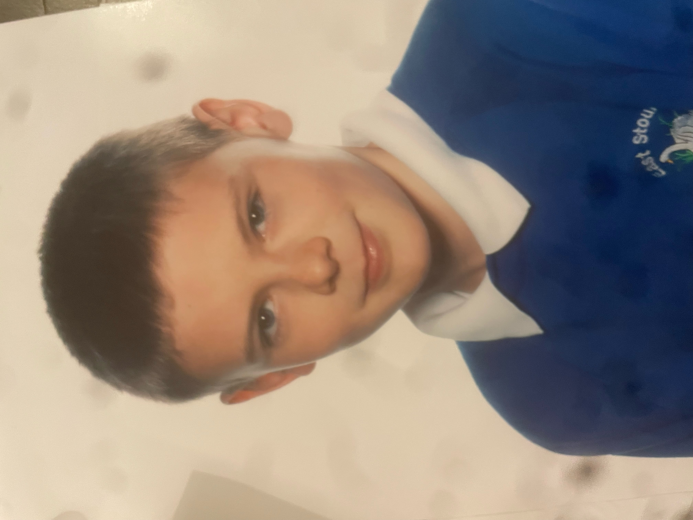
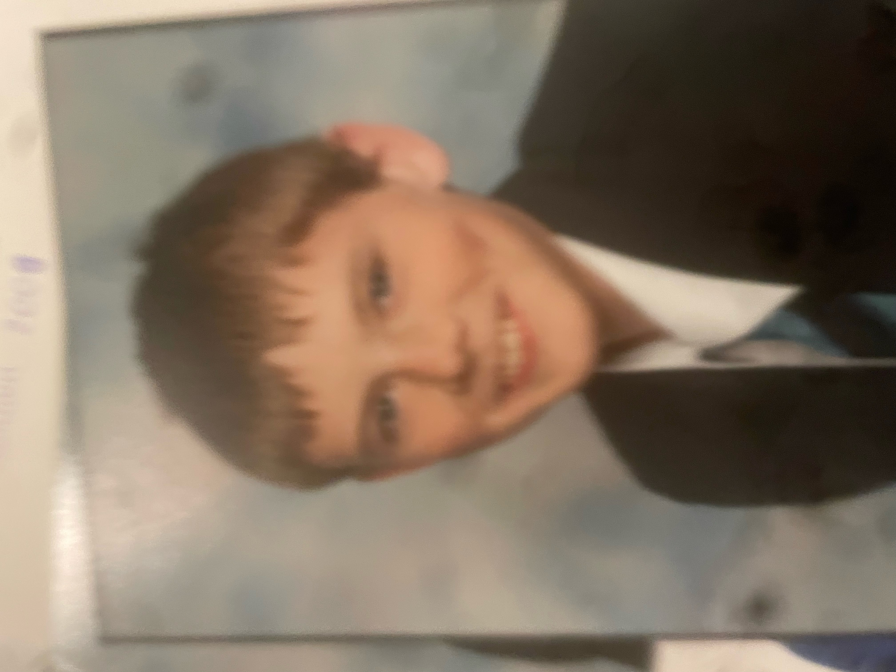
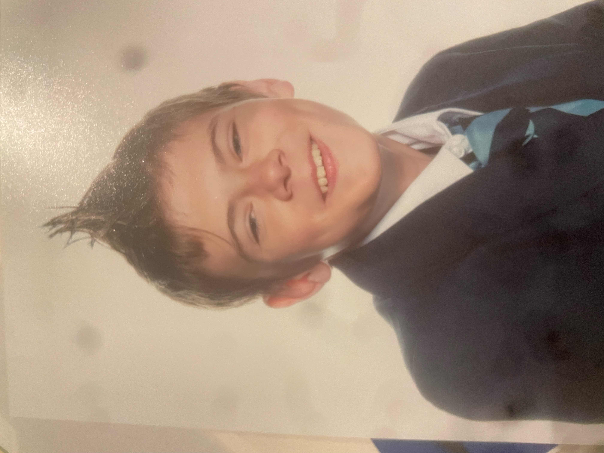
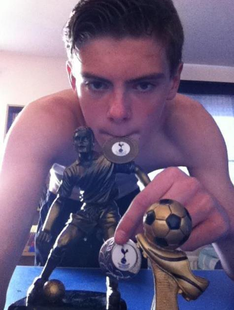

After moving to Ashford in 2005, Dec spent the next 11 years in school there. Let's see how that went for him...


Dec moved to Ashford, Kent, in August 2005. His new school, East Stour Primary, at least kept the same jumper colour as his old one, so it didn't feel too out of place at least. Ashford would prove to be the place Dec would stay living for at least the next 18 years, and counting.

After finishing primary school in 2009, Dec, being quite the genius man (boy?) that he was, was accepted into the Norton Knatchbull Grammar School. Fucking boffin that Dec innit. It was here that Dec realised that he was quite into sport, and quite good at a lot of them. Football, primarily.

Dec would finihs school in 2014, leaving school with 10 GCSEs, adn as captain of Mersham JFC, as arguably the best goalkeeper in the league. The team was shit, which made being its keeper fun, as there was a lot to do. After school Dec decided that he would become a football coach, and joined Hadlow College doing a sport course to facilitate this.
Thank you for coming to me webpage, my very first (outside of that incredibly visually unappealing recipes one). I've decided that, to give it a bit of flavour, and something tangible to aim to build, it will be a very basic autobiographical site. It's essentially a brief imagining of my life in 3 stages, from youth, throughthe development years, into where I am now. Enjoy the journey of me.
With thanks,
Dec
Hold it right there!
Have you subscribed to the newsletter yet? No? No worries, this button here will fix that!